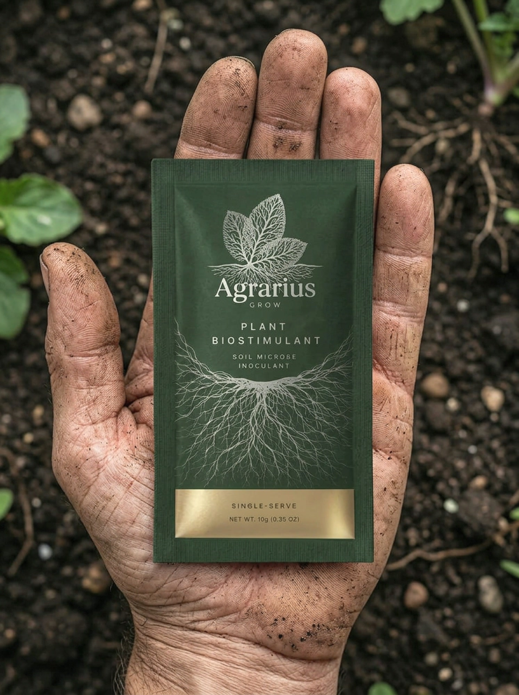
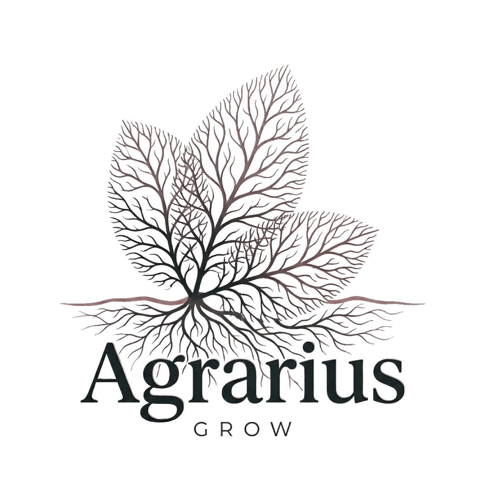
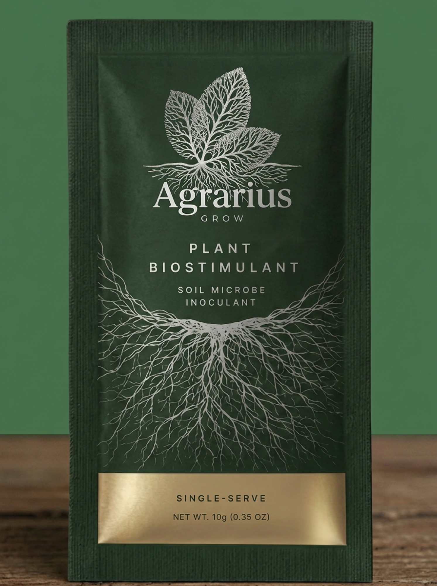
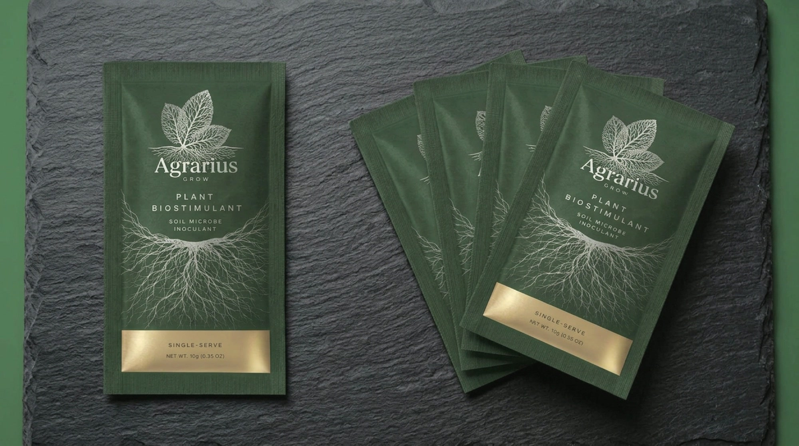
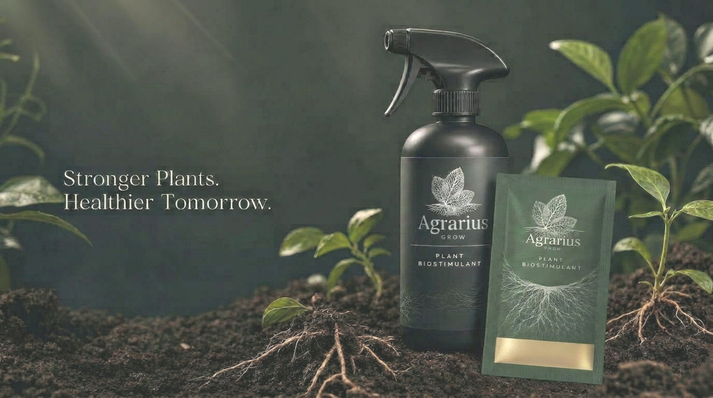
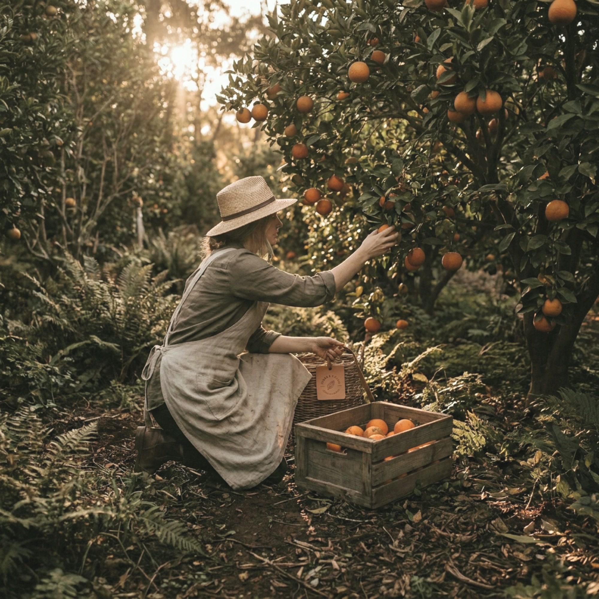
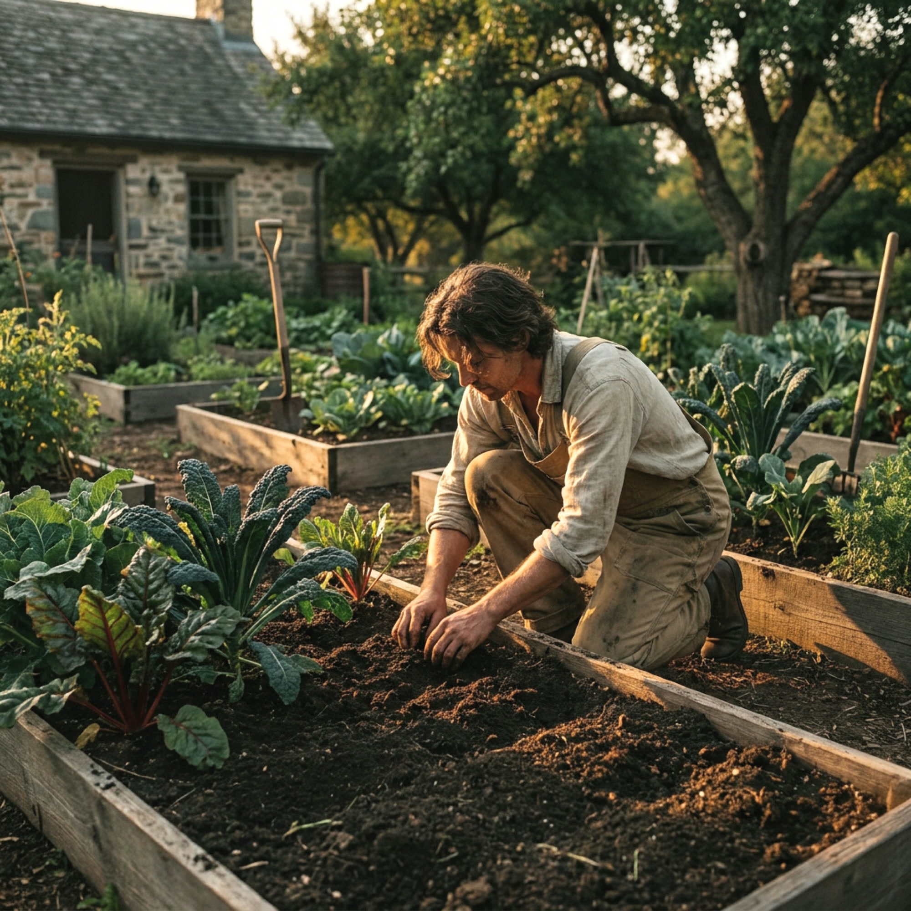
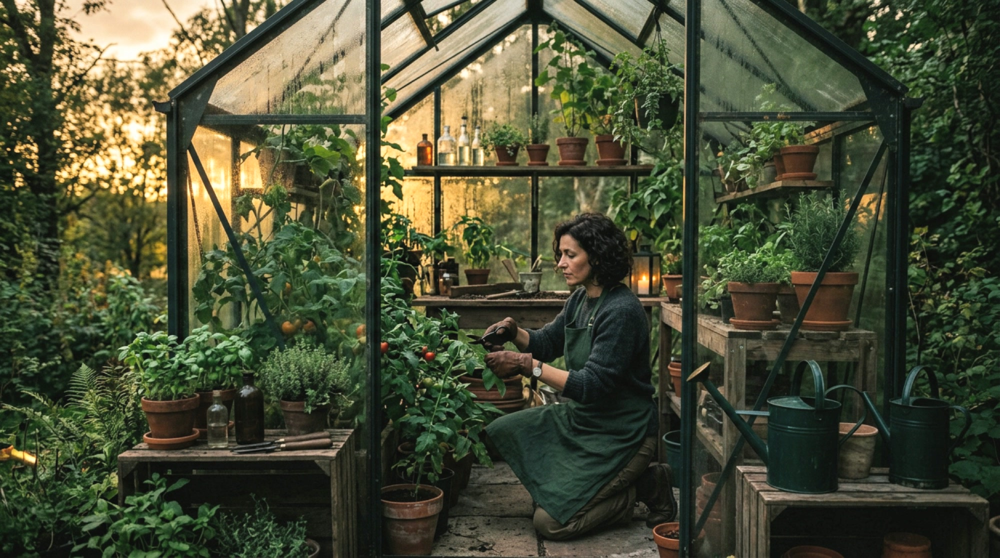

Prepared for the Mountain Valley MD team. July 2026.
Agrarius has 250+ field trials, roughly 89% success, institutional validation across two continents and a technology no competitor can copy. That earns the trust of an agronomist buying by the hectare.
It does not earn the attention of a person standing in their garden holding a phone. That person buys with their eyes first and their reason second. This is a proposal for the brand that wins them, without touching a single thing that works in the B2B business.
Distributors, agronomists, commercial growers across LATAM and North America. $25 to $30 per hectare. The buyer reads a trial table and calculates yield per dollar. The existing identity does that job. It stays exactly as it is.
A single sachet in an envelope, bought at midnight on a phone by someone who wants their plants to thrive. They will never read the trial table. They will judge the brand in about two seconds, and pay a premium if it earns them.
The name stays Agrarius. The equity stays with Agrarius. What changes is the register: the consumer line is built to be desired, not evaluated.
What the grower buys, trusts and reorders. Carries the whole customer relationship.
The proof engine. Credited on pack in wording Mountain Valley approves.
The origin of the technology. Never named on a consumer surface, by design.
This is the Intel Inside model, and the one Mountain Valley already runs with Eons and Quicksome. The parent's name does not add trust in a garden centre. The technology's name does. So the technology gets credited, and the parent stays behind the curtain.
Agrarius joins the conversation. It speaks the plant's own language, the signal that tells it to root deeper, drink better, defend itself early.
Mountain Valley already tells this story: "we signal using the mycelium network in the ground, in the air." No consumer brand has ever packaged it. The most beautiful idea in agriculture, sitting unclaimed.
This is the part no competitor can answer, and the part the brand is built to carry. Agrarius is not a nutrient. It is a signal that triggers the plant's own stress response without any stress present, so the plant optimises itself while staying healthy.
It emulates the stress cue a plant reads before drought or attack. The plant answers by growing stronger secondary roots, translocating nutrients better and arming its own defences, while never actually being stressed.
The molecule moves bidirectionally through xylem and phloem, so it activates the whole plant from a single application point. Sprayed on the leaves, it still builds the roots.
A proprietary carbohydrate coating protects the molecule in storage and in the tank, and releases it only on contact with plant physiology. Nothing is lost before it reaches the plant.
The changes are epigenetic, not genetic. The plant stays non GMO, and the benefit accumulates across growing seasons rather than washing out with the next watering.

Plants normally use only 10 to 15% of the fertiliser poured on them. The rest is waste. That contrast is the number the whole brand can stand on: the unboxing moment, the reason the sachet feels valuable rather than small, and the proof that this is not another jug of diluted water.

The three leaf silhouette is kept, so it still reads instantly as Agrarius. Everything else is rebuilt. The leaves are no longer flat shapes: they are drawn from the filaments of the network itself. A ground line runs beneath them, and the root system spreads below it.
Clean growth above the soil. Intelligence below it. The mechanism of the product, drawn as the logo.
A high contrast serif carries the name. Inter, quiet and modern, does the working copy. Serif for belief, sans for clarity.


The mark, the pack, the photography and the storefront are all drawn from the same system, so the brand holds together the moment a customer meets it. Nothing here is a mood board. Every asset on this slide is a real, finished piece of the brand.

The first thing a customer sees. The sachet mixes into water and goes through a sprayer they already own, so the ritual is simple and the brand carries it.
The entire home grow category sells bottles: multi part stacks at $65 to $150 a cycle, or cheap powders in bags. Every grower forum is a queue of people complaining about bottle fatigue.
Agrarius Grow is a single dose powder sachet. Mix with water, spray the leaves, done. It fits through a letterbox. Nobody in this market is selling that.

The art direction for every image the brand makes. Growers at work in the last hour of daylight, never a smiling model holding a bottle.
Florida and California, watching trees decline. The highest emotional stake in the category, and an application that repeats every year.

Mission aligned, organic driven, willing to pay a premium for provenance. They validate the story for everyone else.

The highest willingness to pay and the most frequent repurchase, 6 to 8 sachets a year. An efficient acquisition channel, never the public face of the brand.
| Crop | Result | Where |
|---|---|---|
| Citrus | Yield increases of 20% to over 50%, plus greening reversal in trial | LATAM, Brazil, Costa Rica |
| Potato | Yield increases above 20% | Brazil, Canada, USA |
| Soybean | Yield increases of 15% to 20% | South and North America |
| Rice | Yield increases of 15% to 20% | Asia, LATAM |
| Wheat | Yield increases of 20% under drought | Canada |
| Corn | Average yield increases of 10% to 20% | Multiple regions |
250+ trials at roughly 89% success, validated with independent institutions: UNESP and FEPAF, the Agronomic Institute of Campinas, Pro Cafe, GAPES, LAFE and others.
Deliberately. In the United States a plant input that claims to cure disease or kill pests becomes a pesticide, and needs federal registration. We stay in the biostimulant lane: nutrient uptake, tolerance to drought and heat, soil health, vigour and yield as a consequence of nutrition. All of it true, all of it provable, none of it triggering a filing.
A serious grower uses 6 to 8 sachets a year, which is $130 to $200 of annual revenue from a single customer, at roughly 85% gross margin. Subscription is the model, not a discount.
A conventional launch rents everything: a brand agency, a photo studio, an SEO retainer, an email vendor, a media buyer, a content team. Each one bills monthly, owns a piece of your brand, and hands you a deck.
Everything on the next slide is infrastructure that is already live and already selling product for other brands we own. Agrarius Grow gets pointed at it. That is the whole reason this can move at the speed it does.
Takes a mark and builds the whole world from it: logo system, packaging, lifestyle photography, motion. Everything you have looked at in this deck came out of it, in days.
Next.js and Medusa, not a marketplace. We own the checkout, the customer and the funnel. It already takes real cards and pushes real orders to a warehouse for another brand we run.
A brief goes in, a coded, on-brand, conversion-shaped page comes out, section by section against a library of proven references. Live selling pages for our own brands were built this way.
The system decides what to publish, writes it, publishes it daily and chases the links. Nobody picks topics by hand. It runs live on two of our brands today.
Research, copy and on-brand ad creative generated per segment with an approval gate before anything runs. No photoshoots, no creative retainer.
Email and SMS flows that fire on what a customer actually did, not on a calendar, plus scheduled social distribution. The subscription model lives or dies on this, so it runs from order one.
The brand you are looking at is itself the proof. It was designed, built and deployed by the same machine that will sell it.
The $7M anchor is 1% of the serviceable market. The conservative floor is $3.6M at half a percent, the ceiling $14.4M at two percent. No retail distribution assumed, no grocery shelf, no Amazon in year one.
Everything else is ours to carry. The brand, the storefront, the acquisition engine and the retention system are all built in house, on infrastructure that already runs other brands.
agrariusgrow.com